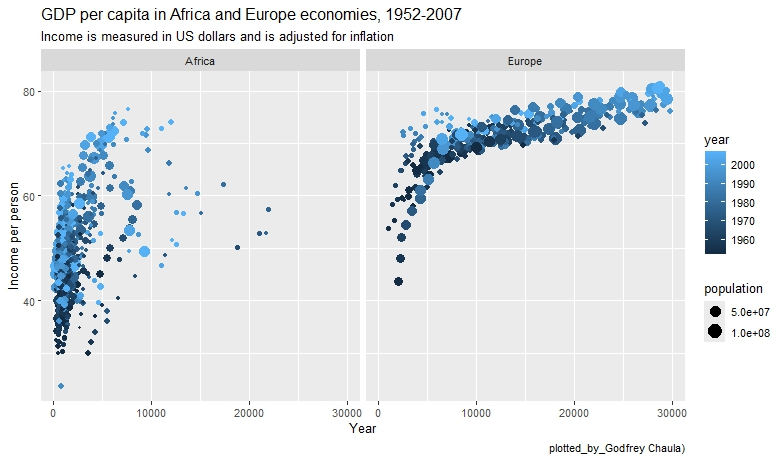

Statistical Analysis
Descriptive statistics, regression, multivariate analysis, time series, survey design, predictive modeling and reproducible workflows with R or Python.
Whether you need help with academic research or business analytics, our team can clean your data, choose appropriate methods, and generate clear reports.


- Hypothesis testing and inferential statistics
- Regression (linear, logistic, Poisson) and model selection
- Time-series forecasting and ARIMA models
- Survey sampling and analysis
- Bayesian modeling and simulation
We also provide training in R, Python, SPSS, and Excel to empower you to conduct your own analyses.